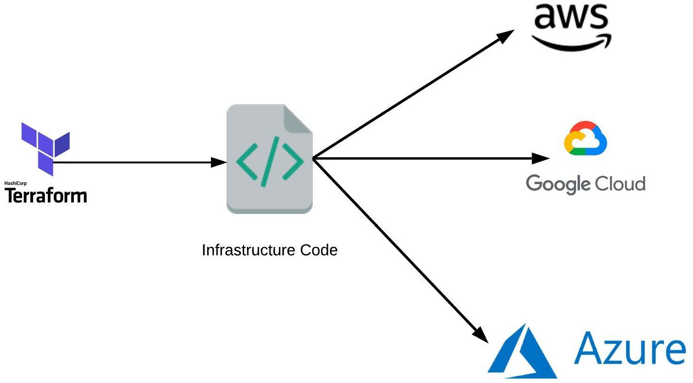
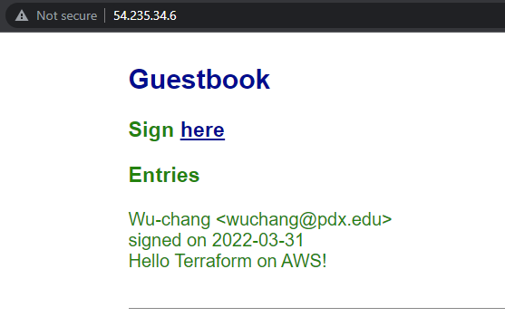

Terraform is an open-source infrastructure as code tool that provides a consistent workflow to manage hundreds of cloud resources. With Terraform, one codifies infrastructure into declarative configuration files that the tool will then deploy into the underlying cloud provider. The figure below shows an example workflow. A practitioner first defines a configuration file that is typically committed into a git repository, then runs a planning step to view the potential effects the configuration might have, before applying the configuration onto a cloud platform which deploys the specified resources.

To begin with, open a Cloud Shell session from the console. By default, AWS does not have Terraform installed. To install it, perform the following commands.
sudo yum install -y yum-utils sudo yum-config-manager \ --add-repo https://rpm.releases.hashicorp.com/AmazonLinux/hashicorp.repo sudo yum -y install terraform
Note that because Cloud Shell sessions are ephemeral Docker containers, you may need to re-install the tool again if you exit the session.
Then, create a directory for your terraform deployment and change into it.
mkdir tf; cd tf
We will be incrementally creating a specification for deploying our Guestbook application on an EC2 VM. terraform uses its own structured data format similar to JSON and YAML for declaratively specifying platform resources to create. The first block to add specifies the cloud provider we are deploying on (AWS). Within this block, we must specify the profile we'll be using from the prior step (default) and the default region where resources will be deployed (us-east-1). Create a file named main.tf and copy the code below into it.
main.tf
// Configure the AWS Cloud provider
provider "aws" {
region = "us-east-1"
}In this lab, we wish to create an EC2 virtual machine to run our application. Each cloud provider has unique labels that can be used to specify the operating system image a VM will run. Since we will run our application on a Ubuntu VM, use the command below to list the most recent image in the ubuntu-2004 family that AWS has available for use.
aws ec2 describe-images \
--filters "Name=architecture,Values=x86_64" \
"Name=name,Values=ubuntu/images/hvm-ssd/ubuntu-focal*" \
--query "sort_by(Images, &CreationDate)[0:].[Name,ImageId]"
On AWS, image names are referenced via their ImageId. Identify the image name for the image ubuntu/images/hvm-ssd/ubuntu-focal-20.04-amd64-server-.... (e.g. ami-xxxxxxx0ba2). We will be using it below in the next block of our terraform file. The block we add specifies an EC2 instance to be created using a machine type of t2.micro. Fill in the image name and save the file.
main.tf
// A single EC2 instance
resource "aws_instance" "guestbook" {
ami = "<FMI>"
instance_type = "t2.micro"
}Finally, AWS EC2 VMs are automatically assigned an external IP address that they can be reached at. We'd like terraform to report back to us the IP address that was allocated for us so we can connect up to it. To do so, at the end of the configuration, add an output block that returns the address.
main.tf
// A variable for extracting the external IP address of the instance
output "ec2instance" {
value = aws_instance.guestbook.public_ip
}Based on what is specified in the configuration file, terraform will load software modules that will help it launch the resources. This is akin to installing packages using npm (for NodeJS) or pip (for Python). Run the following command to do so for terraform.
terraform initThe next command to run is a forecasting tool to allow one to simulate a deployment without actually doing so. This allows one to see the impact a change in a configuration might have on the deployed environment, including the number of resources added, changed, or destroyed. Ensure the following command below returns a plan to add a single resource (the VM).
terraform planFinally, apply the configuration to deploy the resources onto the platform (answering yes to approve the operation)
terraform apply- Take a screenshot showing the completion of the command including its output
Visit EC2 within the web console and refresh it to see that the IP address has been bound to the VM.
- Take a screenshot that includes the VM's IP addresses
By default, traffic going to and from EC2 VMs and external networks is filtered. We must explicitly allow such traffic using filtering rules. On AWS, these rules are associated with security groups. Within our Terraform configuration, we can define a security group, specify its filtering rules, and associate it with our VM. Include the following aws_security_group resource block named sg-guestbook into your configuration. As the block shows, two ingress rules are specified that allow incoming traffic from all sources (0.0.0.0/0) to ports 22 (ssh) and 80 (http). The first allows us to ssh into the VM while the second will allow us to access the web application we will deploy onto the VM later. The last rule is an egress rule that allows all outgoing traffic from the EC2 VM. This is needed for us to download and install the software needed to run the web application on the VM.
main.tf
resource "aws_security_group" "sg-guestbook" {
name = "Guestbook-SG"
// To Allow SSH Transport
ingress {
from_port = 22
protocol = "tcp"
to_port = 22
cidr_blocks = ["0.0.0.0/0"]
}
// To Allow Port 80 Transport
ingress {
from_port = 80
protocol = "tcp"
to_port = 80
cidr_blocks = ["0.0.0.0/0"]
}
egress {
from_port = 0
to_port = 0
protocol = "-1"
cidr_blocks = ["0.0.0.0/0"]
ipv6_cidr_blocks = ["::/0"]
}
}With the security group defined, we can now associate it to the VM instance. Within the aws_instance block, associate the instance to the group.
vpc_security_group_ids = [
aws_security_group.sg-guestbook.id
]Perform a plan operation with terraform and check the results. Then, apply the change.
From Cloud Shell, attempt to ssh into the VM.
ssh ubuntu@<External_IP_Address>The VM has been configured to only allow ssh access via ssh keys, but has not been configured with any keys. The keys used for ssh are typically located in ~/.ssh once they have been generated. If you have not generated an ssh key pair for your Cloud Shell account, use ssh-keygen to generate a keypair. While there are several to choose from, many recommend EdDSA (Edwards-curve Digital Signature Algorithm), a fast elliptic-curve Diffie-Hellmann function.
ssh-keygen -t ed25519After generation, the private key is stored in ~/.ssh/id_ed25519 and the public key is stored in ~/.ssh/id_ed25519.pub. We will now need to update our terraform configuration to add the public key to the VM so we can ssh into the machine. This can be done by first defining an aws_key_pair resource block in our configuration and specifying the public key located in the file system on Cloud Shell.
main.tf
resource "aws_key_pair" "kp" {
key_name = "guestbook-key"
public_key = "${file("~/.ssh/id_ed25519.pub")}"
}Then, we can add the key by its name to the aws_instance resource block.
main.tf
key_name = aws_key_pair.kp.key_nameThis will add the public key to the ubuntu account on the VM.
Plan and apply the change with terraform, then repeat the ssh command to log into the VM.
- Take a screenshot of the successful ssh login from Cloud Shell.
Finally, take down the deployment.
terraform destroy
We now want to configure our infrastructure with our application. While there are many options for doing so, we'll simply re-purpose our prior EC2 deployment from an earlier lab. To do so, we must first run the set of commands for installing and running the application. EC2 VMs can be specified with a startup script in its user_data field that will execute as soon as the VM is instantiated. For our application, we want the VM to install the necessary packages on the machine, clone the course repository containing the Guestbook code, and run gunicorn on port 80 to serve the Guestbook. Create a file in the directory on Cloud Shell with the installation script to run when the VM is created.
install.sh
#! /bin/bash
apt update
apt install -yq build-essential python3-pip gunicorn
pip install flask
git clone https://github.com/wu4f/cs430-src /root/cs430-src
cd /root/cs430-src/03_nginx_gunicorn_certbot
gunicorn --bind :80 --workers 1 --threads 8 app:appThen, include the file in the configuration by setting the user_data value in the aws_instance resource block to the local file.
main.tf
user_data = "${file("install.sh")}"Plan and apply the configuration using terraform.
- Take a screenshot of the output of the command that includes the IP address of the instance
It will take several minutes for the VM to perform the installation of the application. ssh into the instance and perform a process listing until the gunicorn process appears.
ps auxww | grep gunicornVisit the external IP address for the VM using a web browser (e.g. http://<External_IP_address>).
Enter a message using your name, PSU e-mail address, and the message "Hello Terraform on AWS!".
- Take a screenshot of the Guestbook including the URL with the entry in it.

The power of an "Infrastructure as Code" deployment such as Terraform is that it allows us to automate the deployment of infrastructure in a repeatable manner. The final main.tf file can be committed to a git repository and versioned: allowing one to roll back to prior working versions of the infrastructure if breaking changes are made.
Bring down the Terraform deployment using the following command:
terraform destroy
You may optionally delete the directory you created for the lab.
rm -r ~/tf